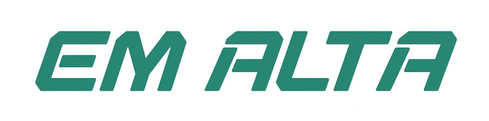

Cursos de programação ganham 2 mil novos alunos por mês
Por: Ryan Fofinho
25 de Outubro de 2026

O interesse pela programação cresce
A programação vem despertando o interesse de pessoas que desejam aprender sobre tecnologia e buscar novas oportunidades profissionais. Cursos presenciais e online ajudam estudantes a conhecer os fundamentos do desenvolvimento de sistemas.
O aprendizado pode começar com conceitos básicos, como lógica de programação, variáveis, condições e repetições. Com a prática, os alunos podem avançar para linguagens como Python, Java e JavaScript.
Aprender na prática faz diferença
Criar pequenos projetos é uma maneira de colocar em prática os conhecimentos adquiridos. Sites, jogos simples e programas para resolver problemas são exemplos de atividades que ajudam a desenvolver o raciocínio lógico.
Além da programação, conhecer bancos de dados, ferramentas de desenvolvimento e controle de versões pode ajudar na preparação para o mercado de tecnologia.
Como começar?
Quem deseja aprender pode procurar cursos gratuitos, conteúdos educativos e plataformas de exercícios. O importante é estudar com frequência, praticar e desenvolver projetos próprios.
A quantidade de alunos mencionada no título é ilustrativa para este projeto escolar e não representa um dado estatístico verificado.
VOLTAR PARA O INÍCIO
